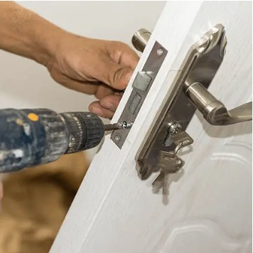
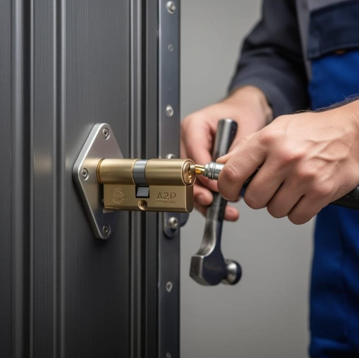

S
★★★★★stéphane GROSoctobre 2026
GVéritable professionnel. Cette homme est dévoué, attentif et méticuleux. Très précautionneux aussi bien dans son travail que dans ses tarifs. Le clien…
Véritable professionnel. Cette homme est dévoué, attentif et méticuleux. Très précautionneux aussi bien dans son travail que dans ses tarifs. Le clien…
Un serrurier très professionnel, sérieux et d’une grande patience. Il est intervenu en pleine nuit dans une situation qui était pas facile…
Très bon serrurier, vraiment professionnel et efficace. Il a réussi à débloquer ma voiture rapidement et surtout sans rien abîmer. Travail propre, sér…
Nos engagements
Ouvrir sa porte à un inconnu en pleine urgence demande de la confiance. Voici ce sur quoi vous pouvez compter avec JS4 Services Pro.
Pas de plateforme d’appels ni de sous-traitant inconnu. Vous parlez à l’artisan, il vous donne son heure d’arrivée et il se déplace lui-même.
Le prix est annoncé au téléphone, puis confirmé par écrit sur place. Vous signez seulement si vous êtes d’accord.
JS4 Services Pro, 1 rue Guillaume Budé à Orléans. SIRET [VOTRE SIRET]. Assurance professionnelle [VOTRE ASSUREUR].
Annoncez cette offre au téléphone ou montrez cette page au serrurier à son arrivée. Elle s’applique sur [MAIN-D’ŒUVRE / DÉPLACEMENT].
Conditions : [VOS CONDITIONS, par exemple une offre par foyer, non cumulable].
Prestations
Serrurier diplômé, nous intervenons aussi en vitrerie et en menuiserie bois, chez les particuliers comme chez les professionnels.

Porte claquée ou fermée à clé : nous cherchons d’abord à ouvrir sans abîmer la serrure.
Serrure usée, forcée ou plus assez sûre : nous posons un modèle adapté à votre porte.
Clé cassée dedans, barillet grippé ou emménagement : le cylindre se change sans remplacer toute la serrure.
Clés restées à l’intérieur de la voiture : ouverture soignée de la portière, sans casse.
Clé perdue ou serrure bloquée : ouverture de la boîte et remplacement de sa serrure.
Vitre cassée, fenêtre ou porte en bois qui ferme mal : mise en sécurité puis réparation.
Avis clients
Véritable professionnel. Cette homme est dévoué, attentif et méticuleux. Très précautionneux aussi bien dans son travail que dans ses tarifs. Le client passe avant tout. Très honnête et d une rare gentillesse…
Un serrurier très professionnel, sérieux et d’une grande patience. Il est intervenu en pleine nuit dans une situation qui était pas facile…
Très bon serrurier, vraiment professionnel et efficace. Il a réussi à débloquer ma voiture rapidement et surtout sans rien abîmer. Travail propre, sérieux et soigné. Franchement, très fort dans son domaine, je recommande à 100 % !…
Secteurs
Nous partons d’Orléans. Le délai dépend de la distance et de la circulation : il vous est donné au téléphone, sans promesse intenable.
Notre approche
Une porte claquée s’ouvre le plus souvent sans rien abîmer. Remplacer une serrure qui fonctionne encore ne rend service à personne, sauf à celui qui la facture. Notre métier consiste à choisir la solution la plus simple qui règle votre problème.
Quand un remplacement s’impose, après une effraction ou sur un mécanisme usé, nous vous montrons pourquoi, nous vous proposons plusieurs gammes et nous vous laissons décider.

Déroulé
Avant d’ouvrir une porte, le serrurier demande une pièce d’identité et un justificatif de domicile : facture, bail ou courrier à votre nom. Si vos papiers sont à l’intérieur, vous les présentez une fois la porte ouverte. Cette règle vous protège : personne ne peut faire ouvrir votre logement à votre place.

Prix d’appel dérisoire, facture multipliée une fois la porte ouverte, serrure remplacée sans raison : ces pratiques touchent des clients pressés et inquiets. Trois réflexes suffisent à s’en protéger.
L’entreprise
JS4 Services Pro est une entreprise artisanale spécialisée en serrurerie, vitrerie et menuiserie bois. Installés à Orléans, nous intervenons dans toute la métropole et jusqu’à 70 km autour, de jour comme de nuit. Notre devise tient en deux mots, ceux de notre logo : sécurité et confiance.
Questions fréquentes
Une porte simplement claquée coûte moins cher qu’une porte verrouillée à plusieurs points. Comptez à partir de 80 € HT pour une porte claquée et 120 € HT pour une porte fermée à clé, plus le déplacement (à partir de 40 € HT). Le prix exact vous est donné au téléphone, puis confirmé par devis.
Moins de 30 minutes sur Orléans et les communes voisines dans la plupart des cas. Pour une commune plus éloignée, nous vous donnons l’heure d’arrivée réelle avant de partir.
Oui dans la grande majorité des cas pour une porte claquée. Nous utilisons des techniques d’ouverture fine. Si la serrure doit être percée, par exemple sur un cylindre de haute sécurité fermé à clé, vous en êtes informé avant.
Oui, 24h/24 et 7j/7, jours fériés compris. Une majoration modérée s’applique la nuit, le week-end et les jours fériés ; elle est annoncée dès l’appel.
Une pièce d’identité et un document prouvant que vous habitez le logement : facture, quittance, bail ou courrier à votre nom. S’ils sont restés à l’intérieur, vous les montrez une fois la porte ouverte.
Carte bancaire, lien de paiement, PayPal, virement ou espèces. Une facture détaillée vous est remise, utilisable pour votre assurance.
Un serrurier d’Orléans vous répond directement, de jour comme de nuit.